Signals
Signals from our networks and partners
Press, reports, and talks from the cities, institutions, and partners we work with — including Bloomberg CityLab, WIRED, the American Planning Association, OECD, and UNDP.
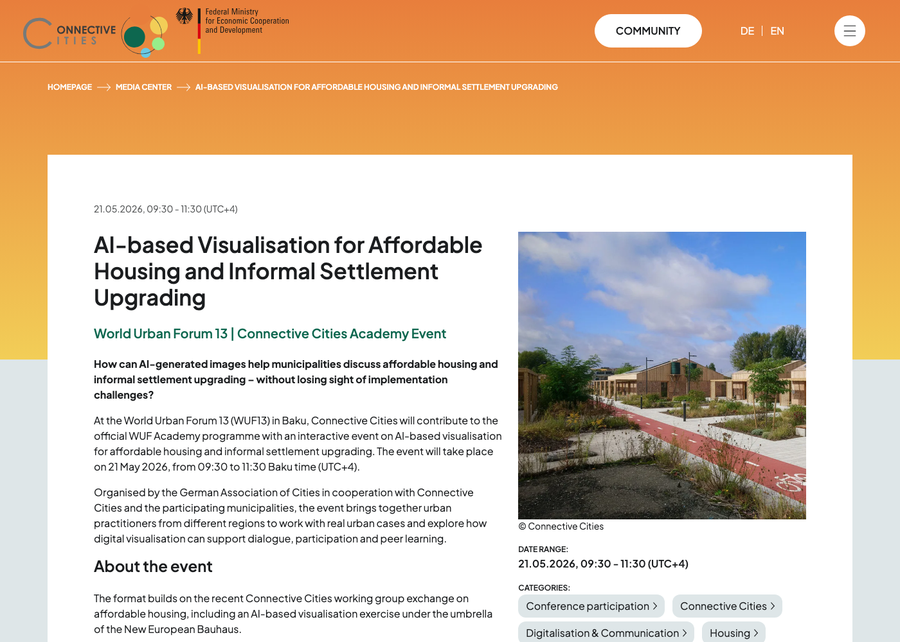
AI-based Visualisation for Affordable Housing and Informal Settlement Upgrading
Connective Cities’ account of its interactive session at the World Urban Forum 2026 in Baku on AI-based visualisation for affordable housing and informal settlement upgrading. CoPlan AI, represented by Damiano Cerrone and Sampo Ruoppila, supported the participatory visualisation process; Cerrone facilitated the practical AI exercise. GIZ’s Sustainable Urban Development Programme in Santa Cruz, Bolivia contributed a methodological reflection on AI-supported scenario thinking.
Read on Connective Cities (GIZ / Engagement Global) →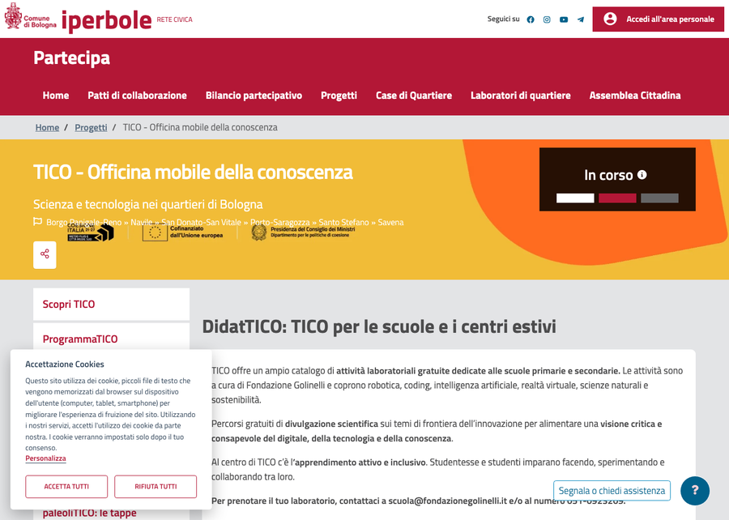
TICO — Officina della Conoscenza, Bologna
The city of Bologna is hosting a summer touring event where citizens are engaged to experiment with CoPlanAI to visualise and understand the impact of local and European urban design policies in the neighbourhoods where they live. The Mayor of
Read on Comune di Bologna — Partecipa →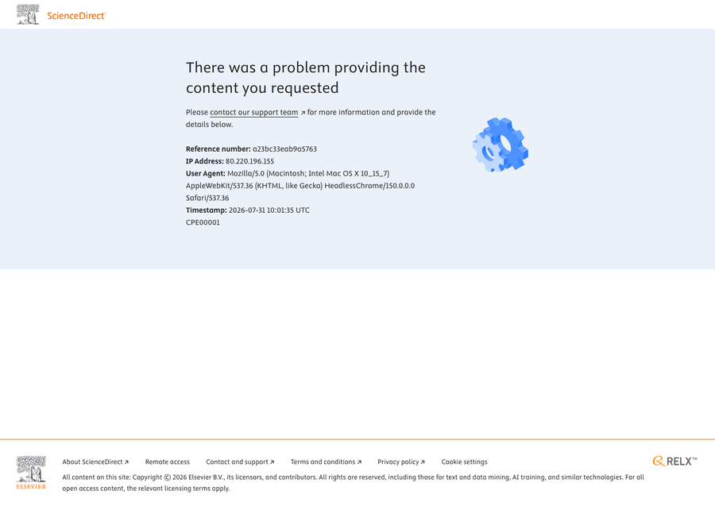
Generative AI for Urban Planning and Design: Progress Review and Future Perspectives
Peer-reviewed review naming UrbanistAI as demonstrating “broad utility across diverse urban settings.”
Read on ScienceDirect →City in Play
Conceptual synergies between generative AI and extended reality. Paywalled — only the snippet naming UrbanistAI was readable.
Read on GamiFIN / ACM →Generative AI in Participatory Urban Planning: Synthetic Inhabitants
DigitalTurku digital-twin case. Fetch was blocked — unverified beyond the citation.
Read on MDPI Land →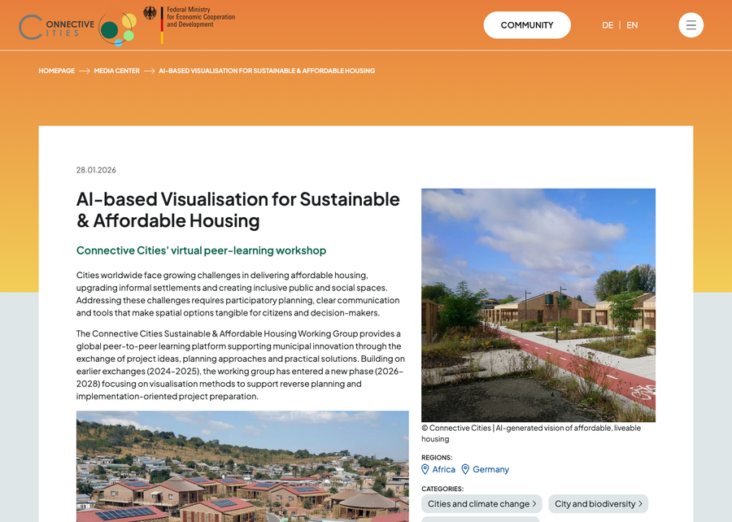
AI-based Visualisation for Sustainable & Affordable Housing
Connective Cities write-up of an AI-based visualisation activity for sustainable and affordable housing, in the same programme strand as the WUF13 session.
Read on Connective Cities (GIZ / Engagement Global) →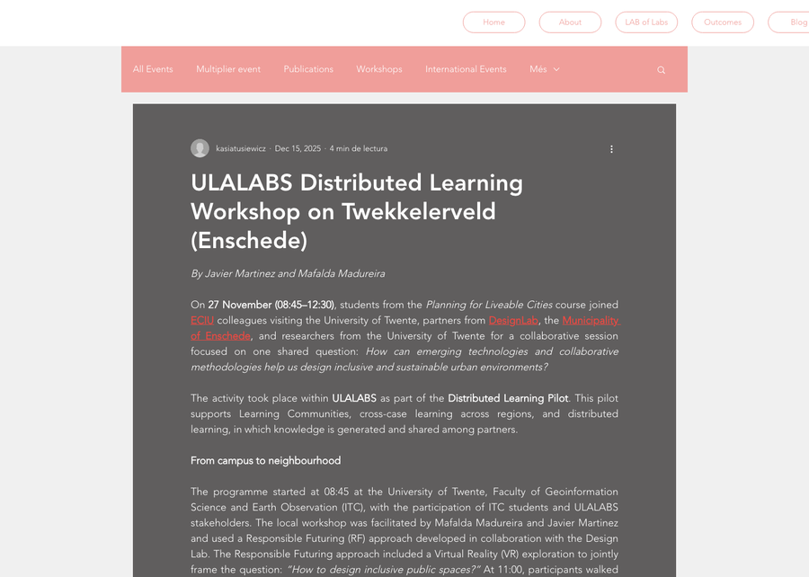
ULA Labs distributed-learning workshop on Twekkelerveld, Enschede
Independent EU-project confirmation that UrbanistAI was tested with residents and the municipality, with workshop photos.
Read on ULA Labs →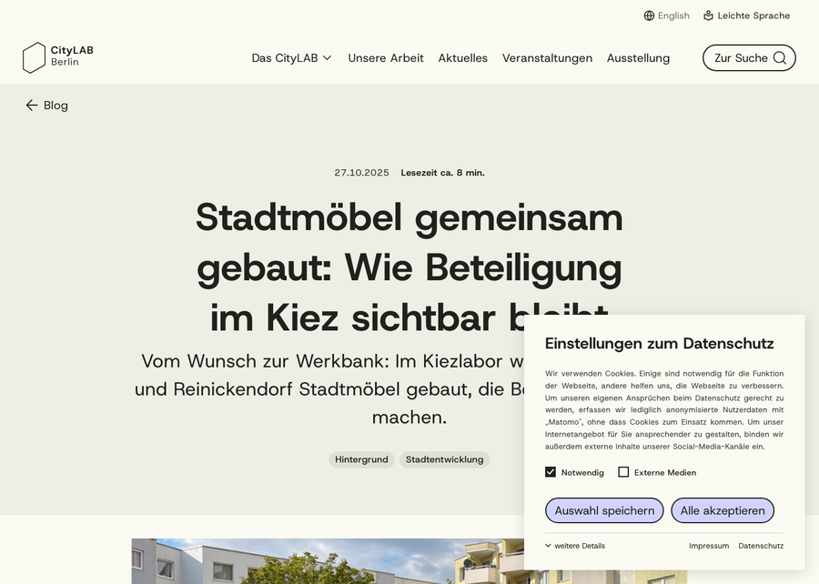
Stadtmöbel gemeinsam gebaut: Wie Beteiligung im Kiez sichtbar bleibt
The most recent mention found anywhere in this scan — UrbanistAI named and photographed in use in Spandau.
Read on CityLAB Berlin →Cities in Motion: Reimagining Urban Innovation
UNDP Accelerator Labs’ global recap naming UrbanistAI’s work in both Panama and Skopje.
Read on UNDP (Medium) →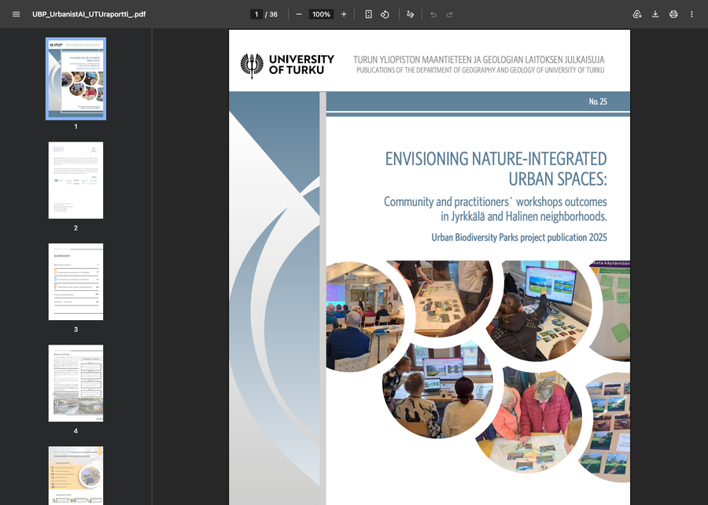
Envisioning Nature-Integrated Urban Spaces
University of Turku report confirming UrbanistAI’s use in the Urban Biodiversity Parks participatory workshops.
Read on Univ. of Turku →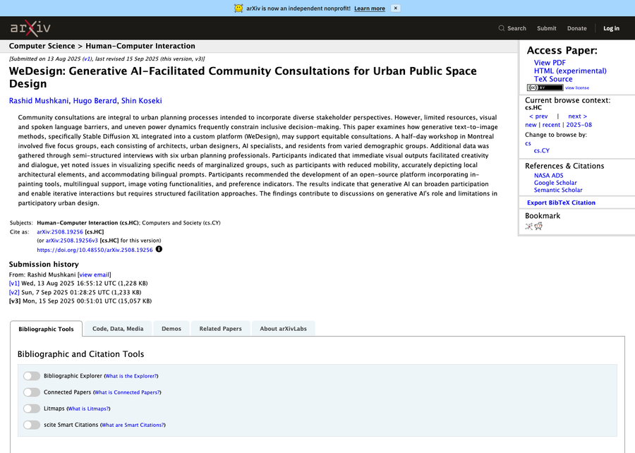
WeDesign: Generative AI-Facilitated Community Consultations
Université de Montréal paper citing UrbanistAI alongside Laneform as real-time, user-modifiable street-visualization tools.
Read on arXiv →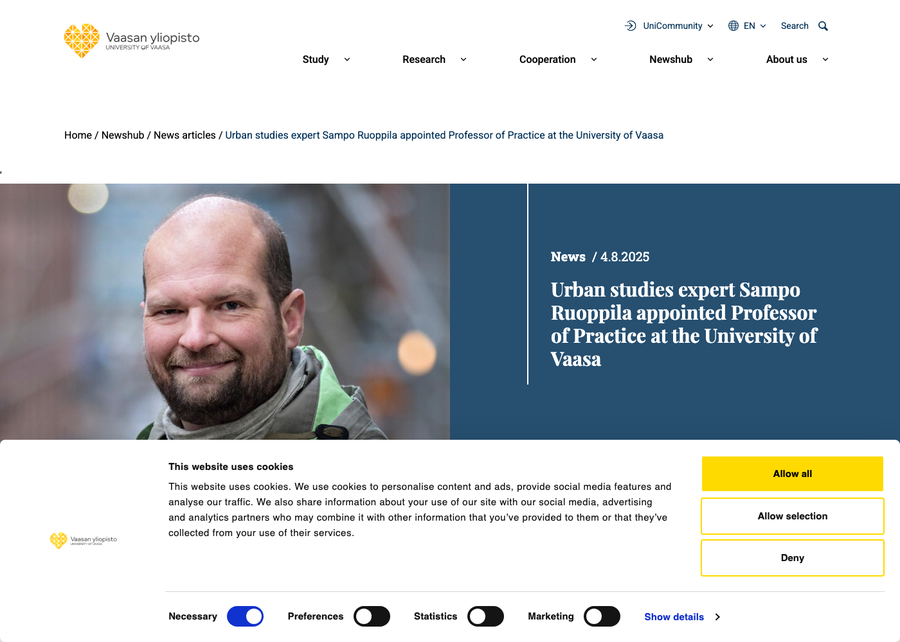
Urban studies expert Sampo Ruoppila appointed Professor of Practice
University of Vaasa press release naming Ruoppila’s role as partner at SPIN Unit Lab, on AI-assisted participatory planning. A good “about the people” piece.
Read on Univ. of Vaasa →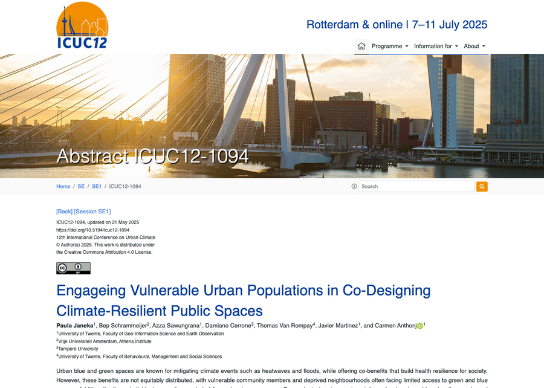
Engaging Vulnerable Urban Populations in Co-Designing Climate-Resilient Public Spaces
ICUC12 (Intl. Conference on Urban Climate, Rotterdam) abstract on the Enschede case — Cerrone co-author.
Read on Copernicus / ICUC12 →Bridging Cities and Citizens with Generative AI
Saudi Arabia public-readiness survey. Fetch was blocked — unverified beyond the citation.
Read on MDPI Buildings →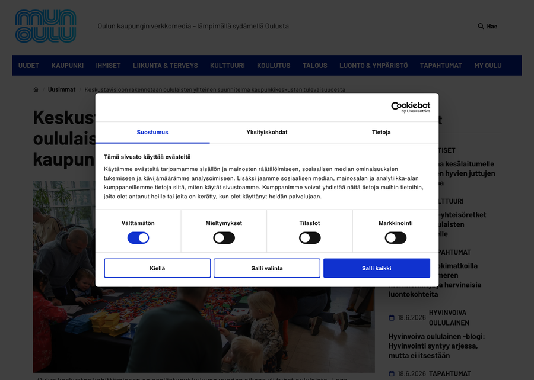
City of Oulu — centre-vision workshops
Two articles on 1,000+ residents building Oulu’s 2040 centre vision via Lego + AI workshops.
Read on munoulu.fi →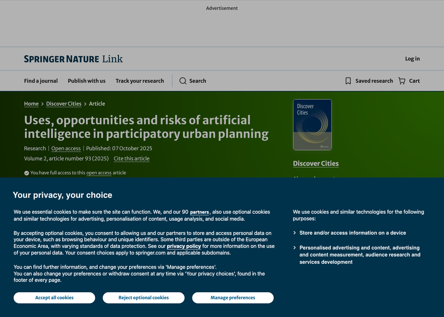
Uses, opportunities and risks of artificial intelligence in participatory urban planning
Peer-reviewed Discover Cities (Springer) journal article.
Read on Discover Cities / Springer →Mobility utopias for realists
Peer-reviewed STRC/ETH Zürich conference paper naming UrbanistAI alongside Hectar and PlacemakingAI.
Read on STRC / ETH Zürich →Enschede scoping review, Wellbeing, Space and Society
Peer-reviewed Elsevier journal article testing UrbanistAI in Twekkelerveld — Cerrone is a co-author.
Read on Elsevier →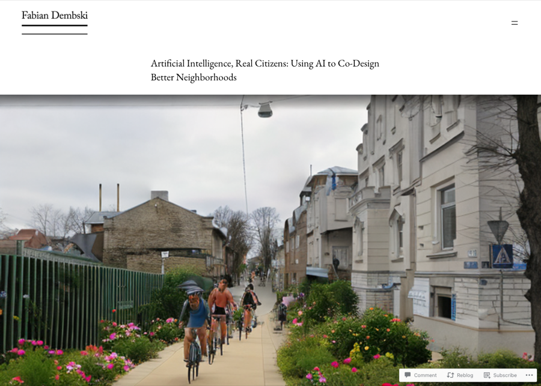
Using AI to Co-Design Better Neighborhoods
TalTech researcher Fabian Dembski’s account of the Kalamaja, Tallinn streetscape workshop.
Read on fabiandembski.com →5 Ways AI Is Transforming Urban Planning
Urban AI (Medium) feature citing UrbanistAI deployments in Berlin, Cleveland, Pristina and Helsinki. A distinct piece from the Medium article already on the site.
Read on Urban AI / Medium →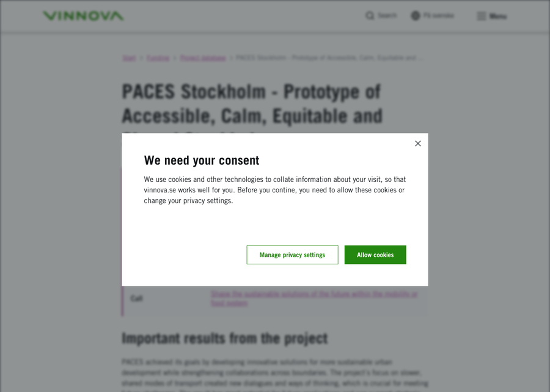
Vinnova — PACES Stockholm
Swedish government innovation agency’s project summary. Read before publishing — the tone around “technical challenges with an AI tool” is mixed, not a straightforward endorsement.
Read on vinnova.se →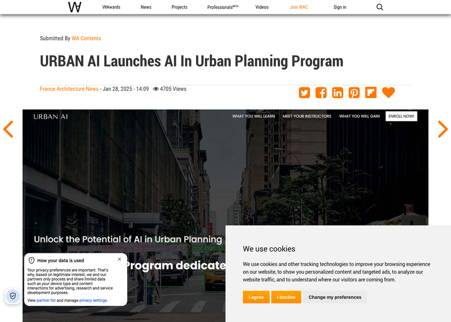
Urban AI launches AI in Urban Planning Program
Names Cerrone as instructor for Urban AI’s dedicated training program.
Read on World Architecture Community →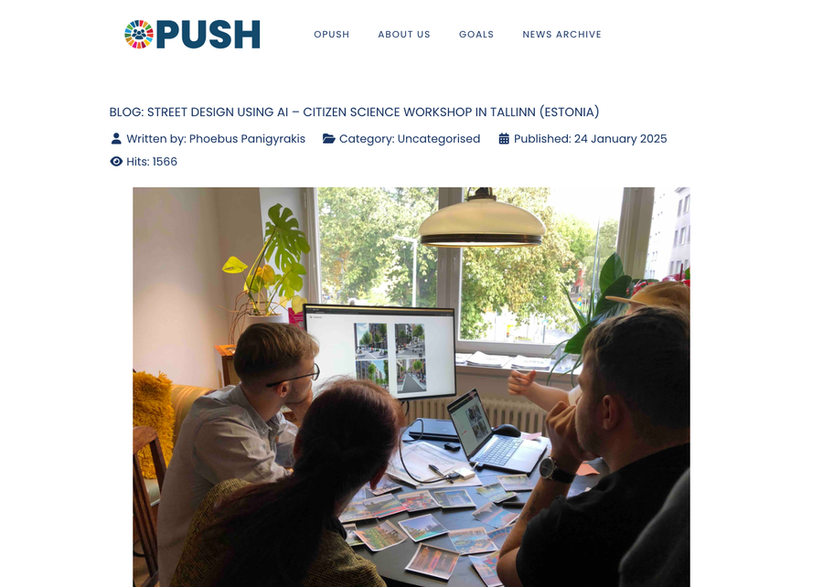
Street design using AI — citizen science workshop
OPUSH (TalTech) companion post on the same Kalamaja, Niine Street workshop.
Read on opush.net →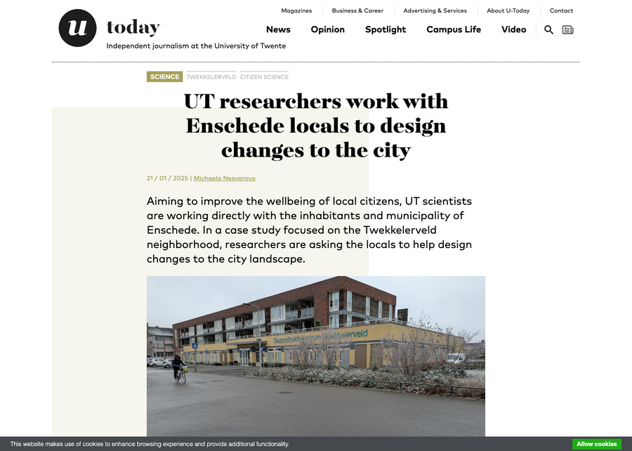
UT researchers work with Enschede locals to design changes to the city
University of Twente’s own press outlet on the Twekkelerveld co-design study, bylined.
Read on U-Today (Univ. of Twente) →Creating visualizations using generative AI to guide decision-making in street designs
Peer-reviewed viewpoint naming UrbanistAI alongside PlacemakingAI and Laneform as generative tools reshaping street-design participation.
Read on ScienceDirect →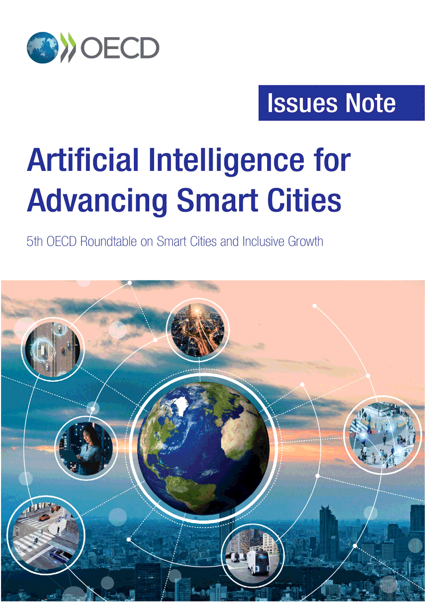
OECD — Artificial Intelligence for Advancing Smart Cities
The OECD Programme on Smart Cities and Inclusive Growth cites UrbanistAI as an example of generative AI used for inclusive, participatory urban planning.
Read on OECD →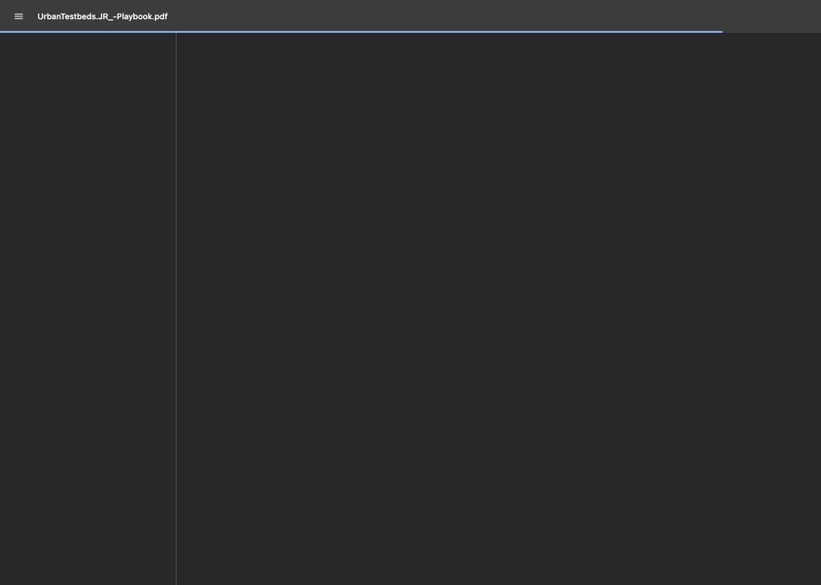
UrbanTestbeds.JR Playbook
199-page official EU Interreg playbook documenting UrbanistAI bootcamps and the Hertsöskolan workshop in Luleå.
Read on EU Interreg →Reshaping urban futures: applying digital technologies to urban resilience
UNDP’s global corporate blog names the UNDP–UrbanistAI partnership specifically for Prishtina — distinct from the Panama Accelerator Labs post already live.
Read on UNDP Geneva →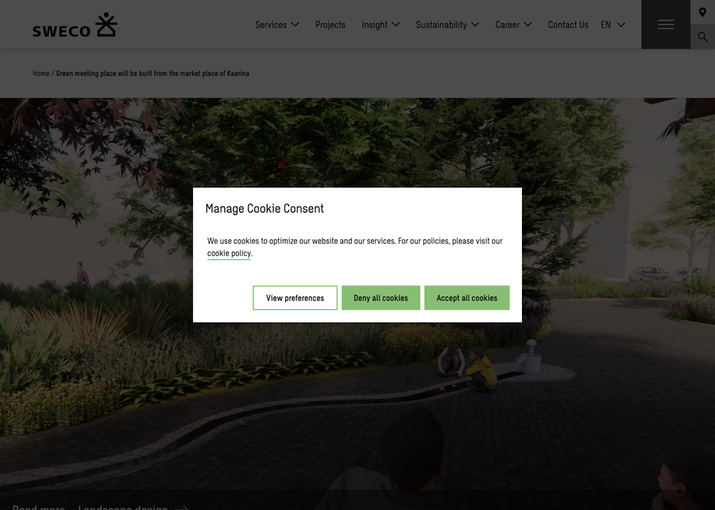
Sweco — Kaarina Market Square
Engineering firm’s project page using Urbanist AI visualisations for the redesign.
Read on sweco.fi →Between Imagination and Image: How AI Supports Participation in Urban Planning
German Informatics Society digital-library paper using Kaarina, Finland resident interviews as its case study.
Read on GI Digital Library →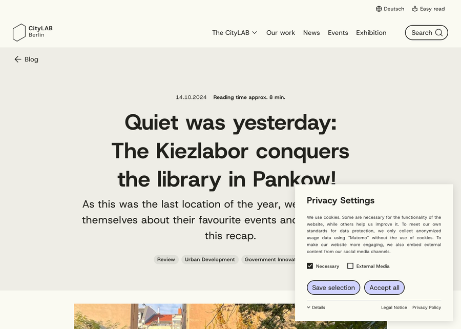
Quiet was yesterday: the Kiezlabor conquers the library in Pankow
Names the UrbanistAI platform directly in a youth-focused “Kiezblock Visions” workshop.
Read on CityLAB Berlin →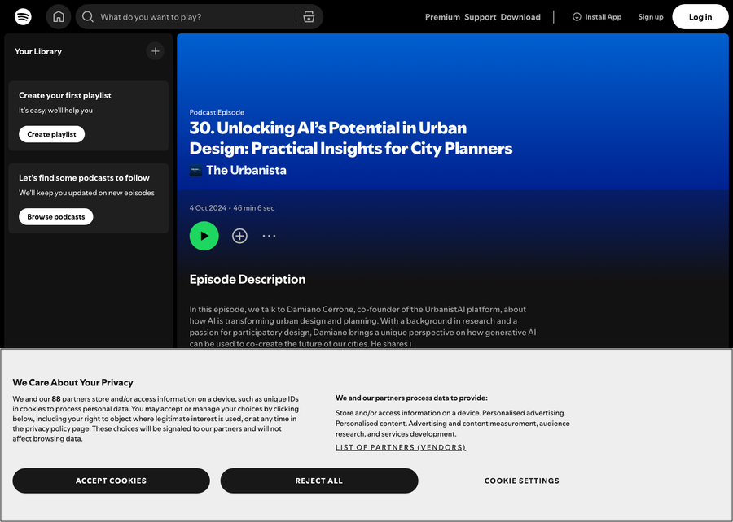
Unlocking AI’s Potential in Urban Design
The Urbanista podcast, episode 30, practical insights for city planners with Cerrone.
Read on The Urbanista →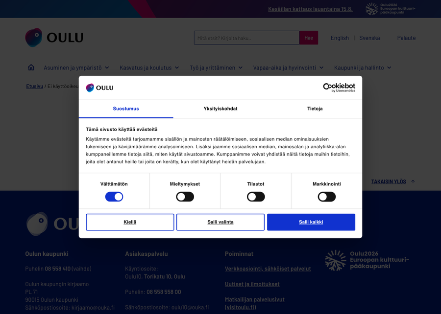
City of Jyväskylä — KUDOS blog
“Shared Building AI” pilot reimagining the main library’s future use.
Read on ouka.fi/kudos →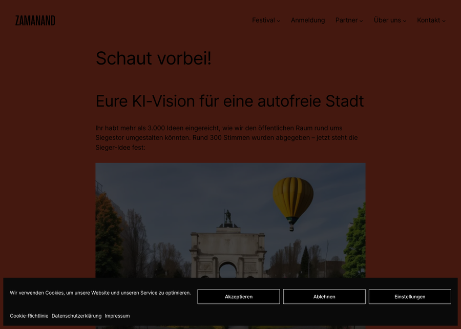
Schaut vorbei! Jetzt abstimmen — Zamanand Festival
“Finnish startup UrbanistAI” — visitors generated ~3,000 AI visions for a car-free Munich; the winning idea was actually built as a walkable prototype at the festival. Rare confirmed built outcome.
Read on Zamanand Festival, Munich →Bringing communities together through AI-driven urban planning
UNDP’s own blog on the Panama City (Betania) intergenerational workshop, redesigning public space from residents’ own photos.
Read on UNDP Accelerator Labs →10 Best AI Tools for Urban Planning
Parametric Architecture names UrbanistAI among the ten best AI tools for urban planning — “designed to turn passive observers into active participants,” blending collective intelligence with AI for map-based ideation and public campaigns.
Read on Parametric Architecture →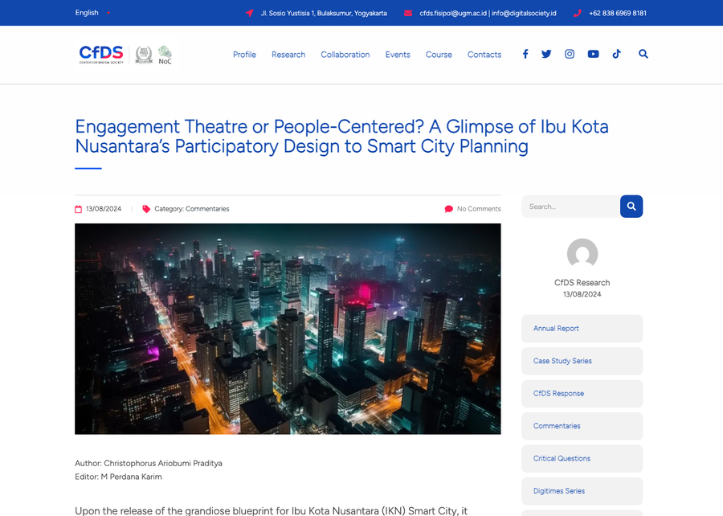
Engagement Theatre or People-Centered?
Independent academic critique (Centre for Digital Society, Gadjah Mada Univ.) singles out the UrbanistAI/Univ. of Turku workshop as the one genuine participatory-design effort in Indonesia’s new capital, amid otherwise “pseudo-participation.”
Read on digitalsociety.id →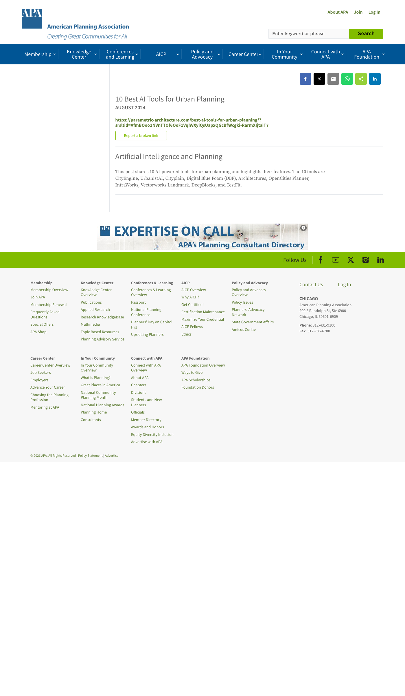
10 Best AI Tools for Urban Planning — APA Knowledgebase
UrbanistAI is catalogued in the American Planning Association’s Knowledgebase among the best AI tools for urban planning.
Read on APA Knowledgebase →Dubai residents get chance to design upcoming park
Khaleej Times covers residents using the Urbanist AI platform live to co-design a new park at Nad Al Hamar.
Read on Khaleej Times →How Dubai is laying the foundations for AI-powered urban design
Apolitical (gov-tech publication) covers the platform’s debut at the World Government Summit’s “Edge of Government” exhibition.
Read on Apolitical →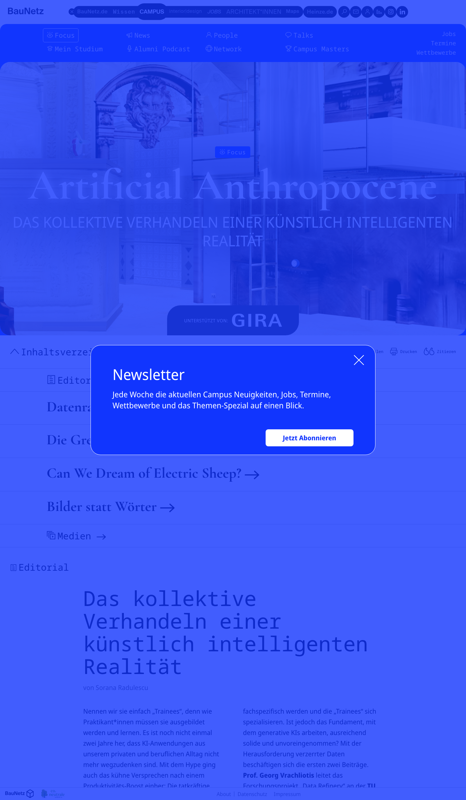
Artificial Anthropocene
BauNetz Campus’ focus issue on the human–data relationship highlights UrbanistAI’s development of an AI-based “unified language” for inclusive, barrier-free participatory urban planning.
Read on BauNetz Campus →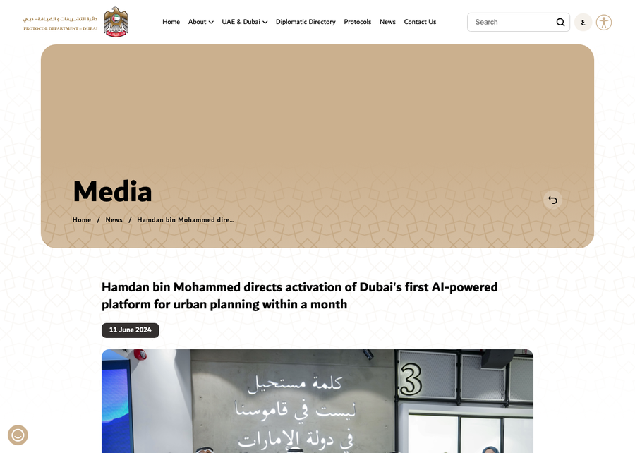
Hamdan bin Mohammed directs activation of Dubai’s first AI-powered urban planning platform
Official Dubai government release: the Crown Prince orders the AI-powered participatory platform live within a month. Precedes the Khaleej Times piece by five weeks.
Read on Digital Dubai →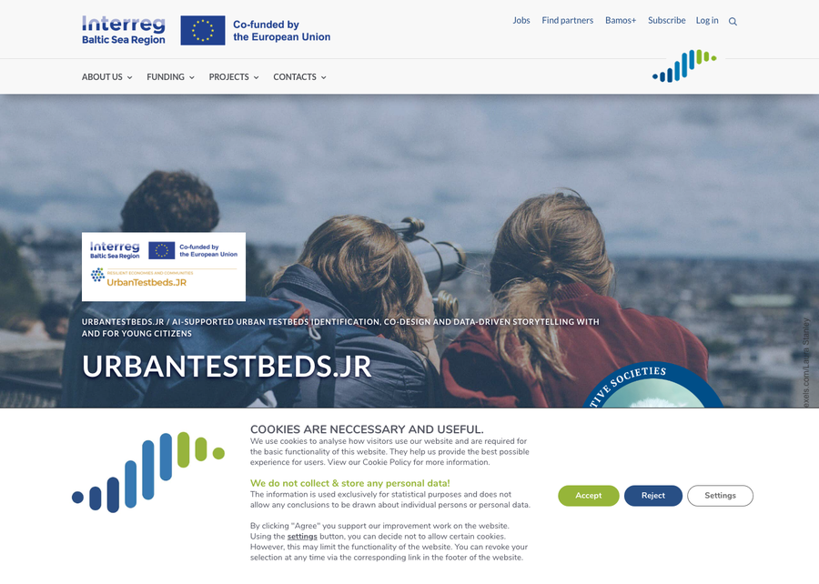
UrbanTestbeds.JR — project overview
EU Interreg Baltic Sea Region project page; partners include Luleå/LTU, HafenCity Hamburg, Aarhus, Univ. of Twente ITC.
Read on Interreg Baltic →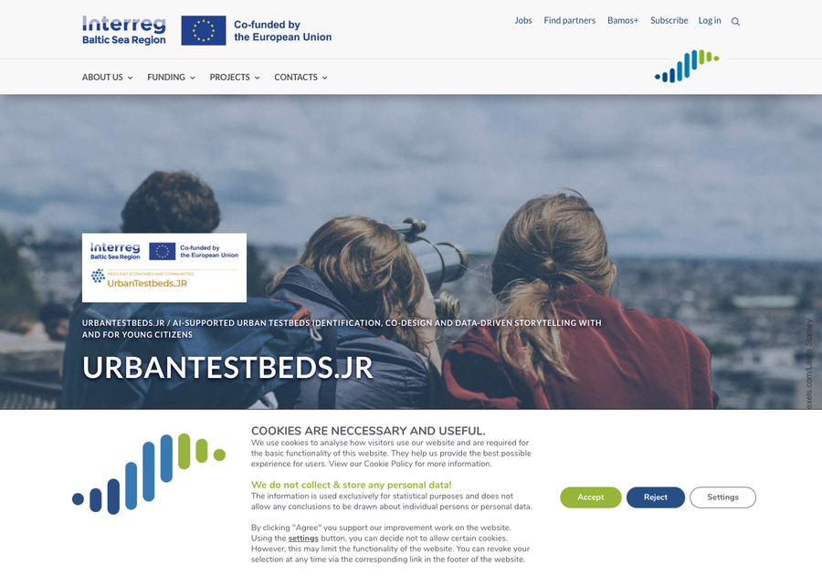
UrbanTestbeds.JR — Habibipour quote
Partner quote (LTU) on the Luleå deployment.
Read on Interreg Baltic →OECD — Governing with Artificial Intelligence
OECD’s “Governing with Artificial Intelligence” features UrbanistAI in its chapter on AI for civic participation and open government.
Read on OECD →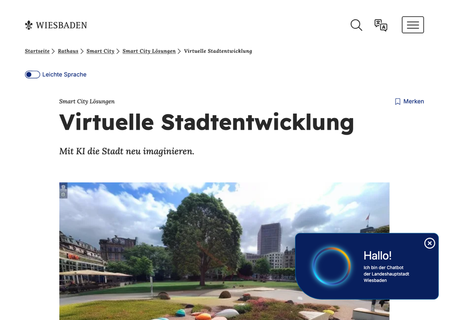
City of Wiesbaden — Smart City
Names CoPlanAI directly (not just UrbanistAI) for citizen and schoolchildren participation.
Read on wiesbaden.de →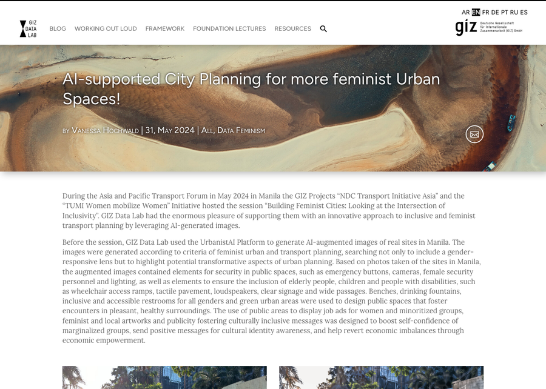
AI-supported city planning for more feminist urban spaces
GIZ Data Lab used the UrbanistAI platform to generate visuals of real Manila sites for the Asia-Pacific Transport Forum.
Read on GIZ Data Lab →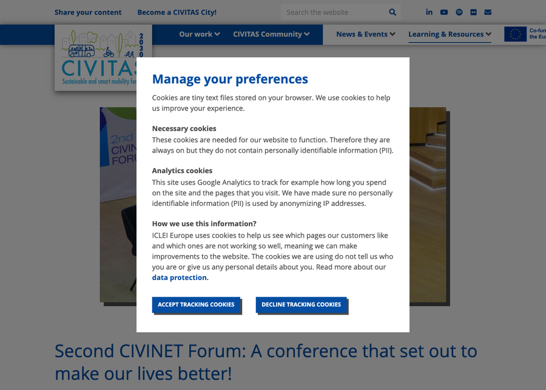
Second CIVINET Forum: a conference that set out to make our lives better
EU CIVITAS covers Cerrone-led workshop “Dive into the Artificial Intelligence of Urban Planning,” Athens.
Read on CIVITAS / CIVINET →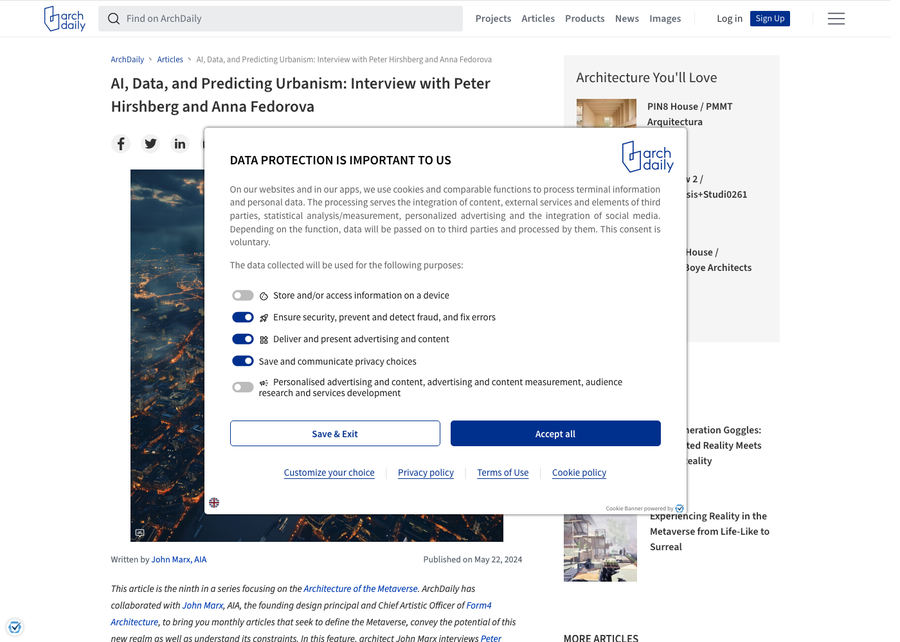
AI, Data, and Predicting Urbanism
A second, distinct ArchDaily piece — interview describing UrbanistAI as a text-to-image tool for the Helsinki public-square revitalisation.
Read on ArchDaily →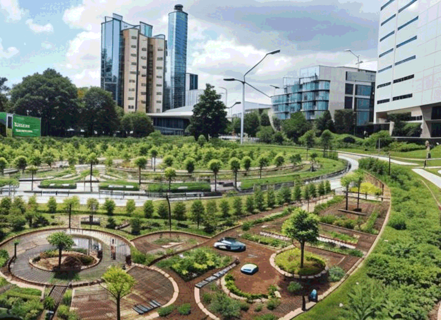
Visualizing the Future: Artificial Intelligence in Climate Action
The UNDP Panama Accelerator Lab used UrbanistAI in intergenerational workshops — letting students and residents visualize climate futures for their neighbourhoods to stimulate informed climate action.
Read on UNDP Accelerator Labs →UrbanistAI — AI Generativa nella Pianificazione Partecipativa
Cerrone’s keynote at the Esri Italia national GIS conference, Rome — video plus two recap articles from Esri Italia and GEOSmartMagazine.
Read on Esri Italia (YouTube) →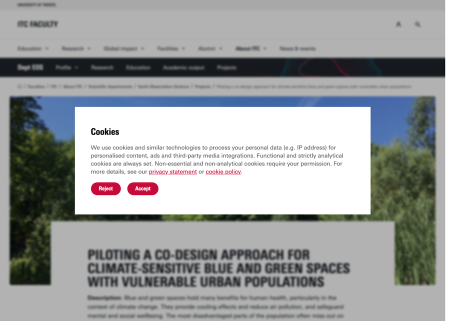
UT ITC — Blue/Green Spaces project page
University of Twente faculty page naming UrbanistAI as partner, VU-UT Collaboration Fund.
Read on utwente.nl →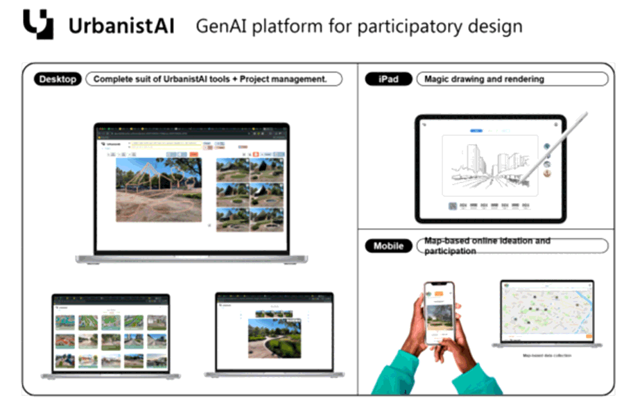
Reimagining Helsinki: participatory urban planning with generative AI
The European Commission’s Public Sector Tech Watch profiles how Helsinki is reimagining participatory planning with generative AI through UrbanistAI.
Read on EC Public Sector Tech Watch →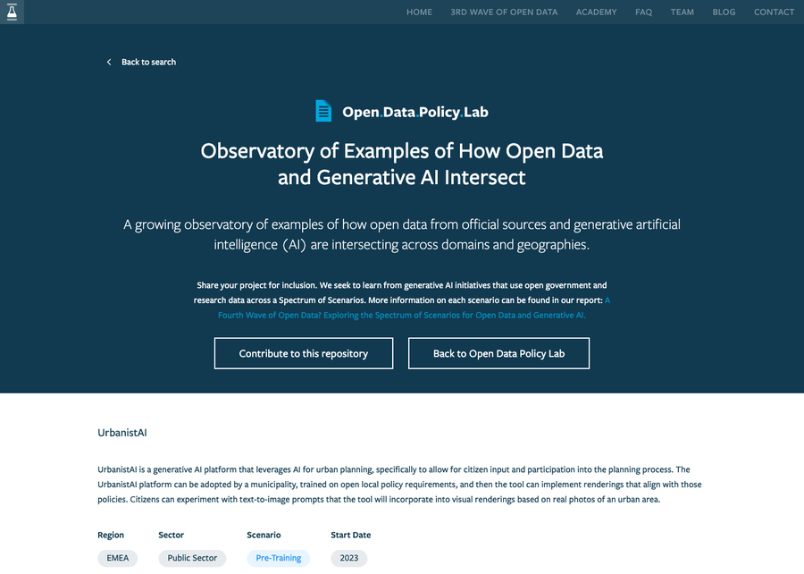
Open Data Policy Lab — GenAI observatory
Catalogs UrbanistAI as an open-data + generative-AI public-sector example.
Read on opendatapolicylab.org →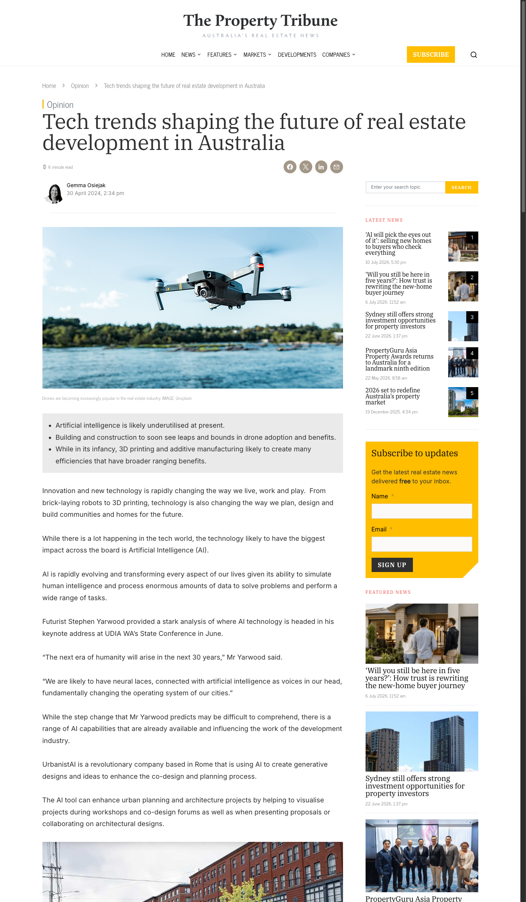
Tech trends shaping the future of real estate development in Australia
Founder Damiano Cerrone on how UrbanistAI condenses months of design-and-consultation cycles into a single co-design workshop — and why every office will train its own generative models.
Read on The Property Tribune →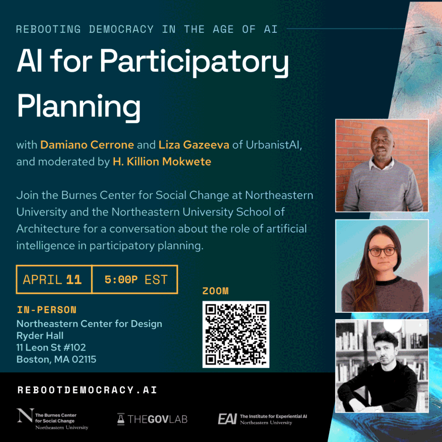
AI for Participatory Planning — Reboot Democracy
Damiano Cerrone joins The GovLab’s Reboot Democracy series on AI for participatory planning, hosted by the Burnes Center for Social Change at Northeastern. The session was recorded; see the event listing for the video.
Read on The GovLab →Pilvi Posio — Ibu Kota Nusantara post
University of Turku project lead’s own LinkedIn post on the Foresight for Resilient Cities/Nusantara collaboration.
Read on LinkedIn →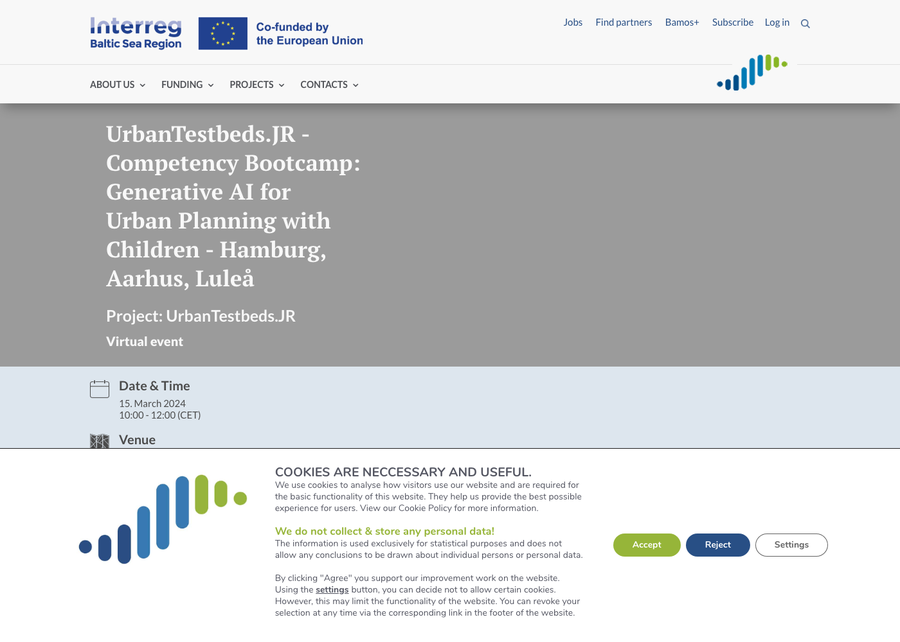
UrbanTestbeds.JR bootcamp listing
Generative-AI bootcamp for children, part of the same EU programme.
Read on Interreg Baltic →AI Can Build a Brighter Urban Future — If We Let People Have a Say
Anthony Townsend and Hubert Beroche argue generative AI is lowering the barriers to participation — with UrbanistAI putting the power to visualise alternative designs directly in residents’ hands.
Read on Bloomberg CityLab →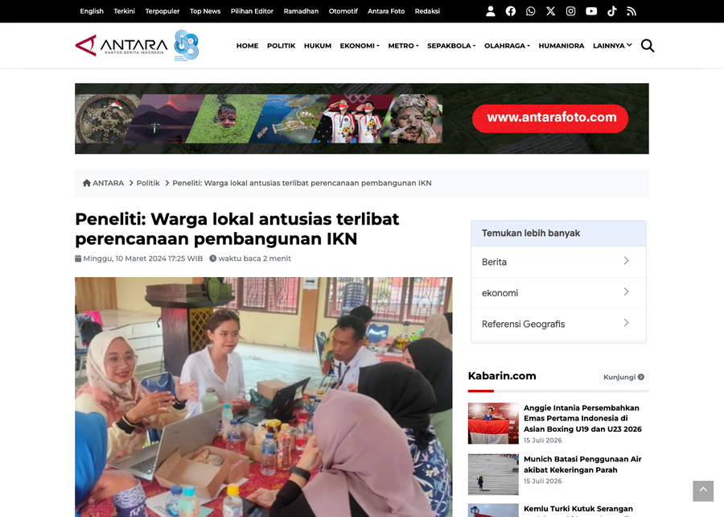
Peneliti: Warga lokal antusias terlibat perencanaan pembangunan IKN
Indonesia’s state news agency covers the UrbanistAI / University of Turku workshop for Indonesia’s new capital city, Nusantara.
Read on ANTARA News →Can AI tools build more people-centred cities?
An interview with co-founder Damiano Cerrone on why participatory planning needs reciprocity — letting communities not just propose ideas but jointly evaluate them in the room.
Read on City Destinations Alliance →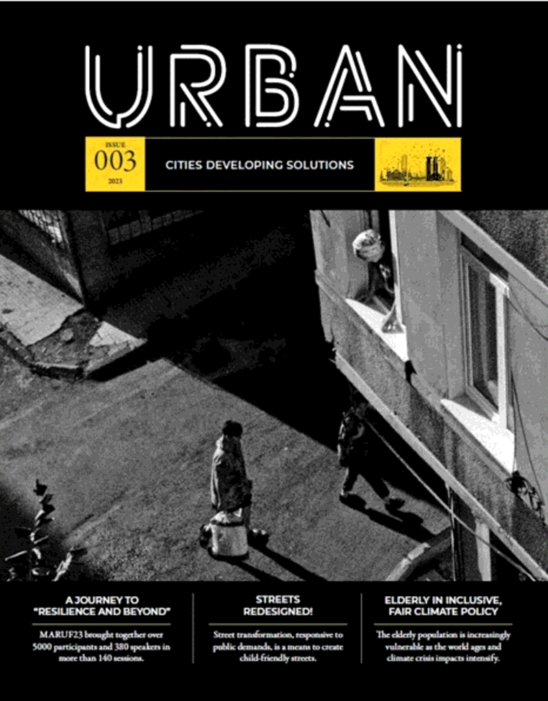
URBAN magazine — “Cities Developing Solutions” (Cerrone interview)
The Marmara Municipalities Union’s URBAN magazine features an interview with UrbanistAI’s Damiano Cerrone on generative AI and participatory city-making.
Read on URBAN magazine (Marmara Municipalities Union) →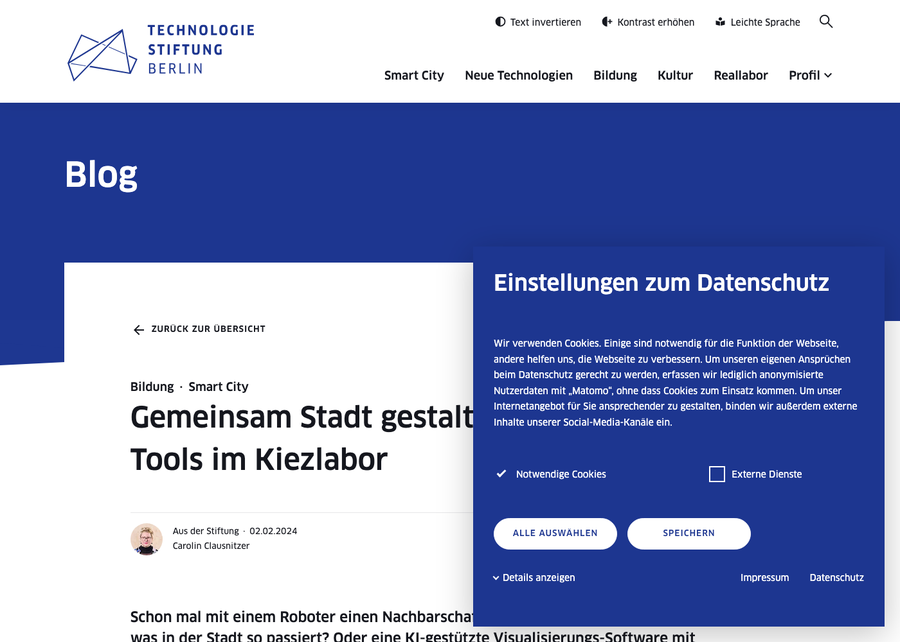
Gemeinsam Stadt gestalten: Mit digitalen Tools im Kiezlabor
Dedicated section on “Urbanist.AI” at the Neu-Tempelhof Kiezlabor workshop, with a partner quote.
Read on Technologiestiftung Berlin →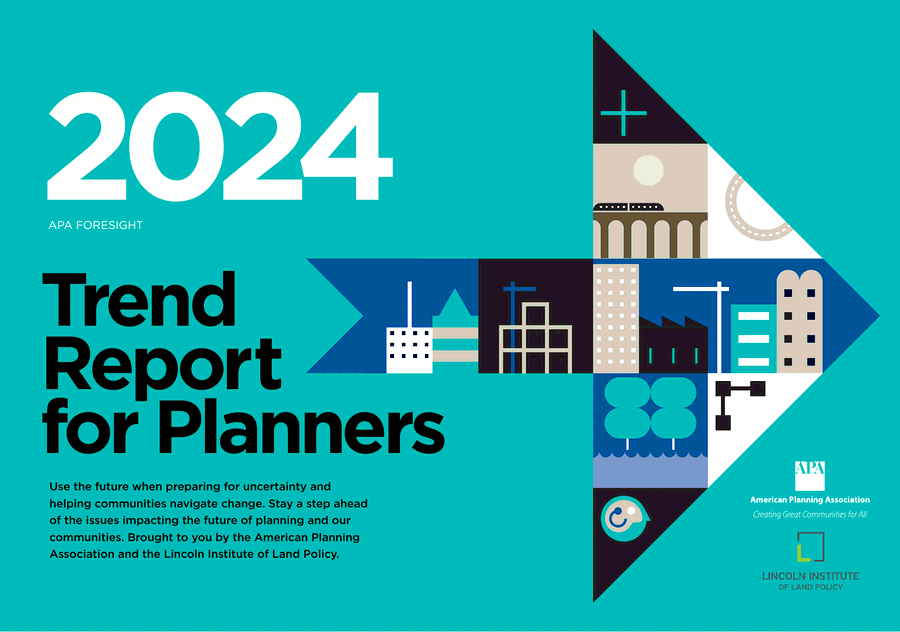
2024 Trend Report for Planners
The APA Foresight team’s 2024 Trend Report for Planners names UrbanistAI among the technologies reshaping participation and the rise of “citizen planners.”
Read on American Planning Association →Humankind — collaboration announcement
Third-party LinkedIn post (Humankind’s own account, not UrbanistAI’s) announcing the workshop collaboration.
Read on LinkedIn →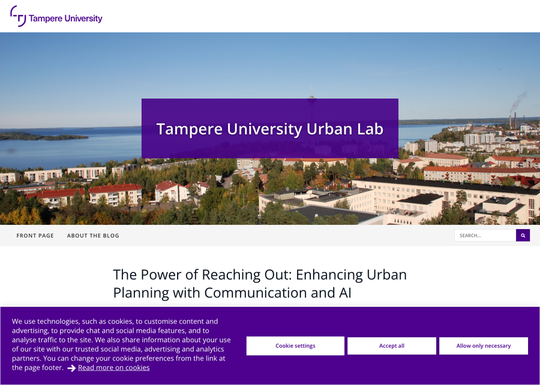
The Power of Reaching Out
Tampere University student blog, urban-lab coursework using communication and AI.
Read on blogs.tuni.fi →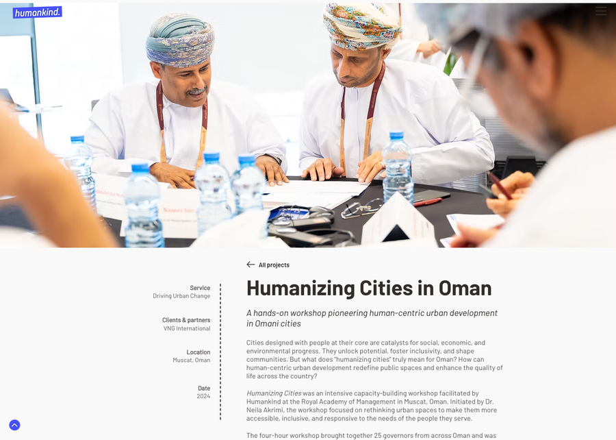
Humankind — Humanizing Cities in Oman
Muscat capacity-building workshop, 25 Omani governors, “AI tools provided by UrbanistAI.”
Read on humankind.city →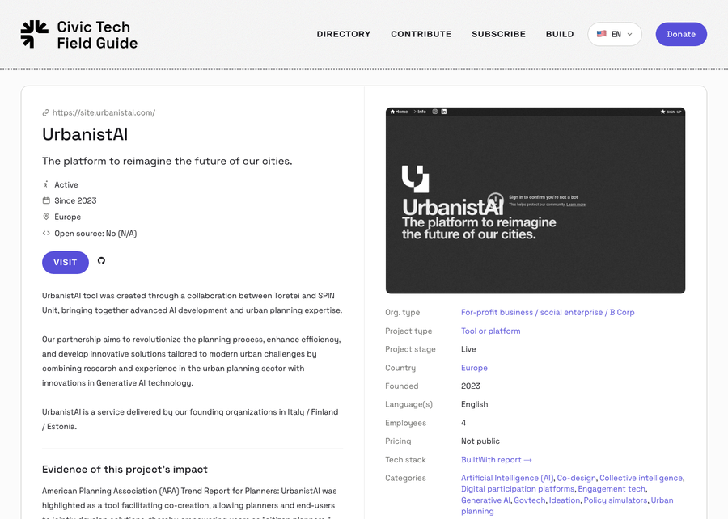
Civic Tech Field Guide — UrbanistAI listing
Directory profile naming founders and users including Helsinki, Estonia’s Ministry of Climate, CityLAB Berlin.
Read on civictech.guide →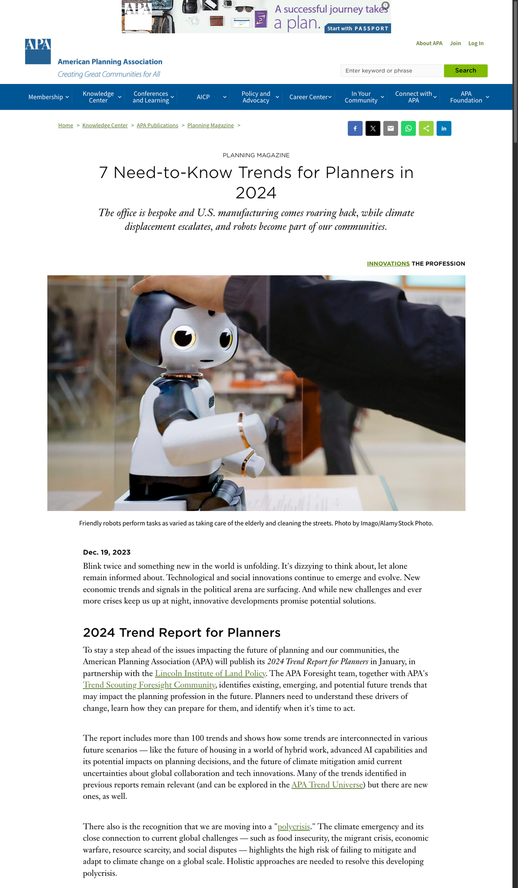
7 Need-to-Know Trends for Planners in 2024
The APA Foresight team names Urbanist AI in its annual trend report — empowering users as “citizen planners” who actively co-design their surroundings.
Read on American Planning Association →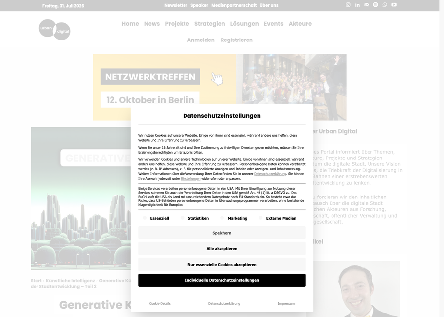
Generative Künstliche Intelligenz in der Stadtentwicklung, Teil 2
German smart-city outlet on UrbanistAI’s Kiezlabor workshop at Gartenstadt Neu-Tempelhof, Berlin — first of a sustained multi-year Berlin press cluster.
Read on urban-digital.de →Miltä Havukoski näyttää tulevaisuudessa?
City of Vantaa news story with resident quote and an UrbanistAI image gallery.
Read on Vantaa.fi →Toward Participatory Urban Planning
Urban AI examines how UrbanistAI brings generative AI into community-led city-making — turning residents into active co-designers of public space.
Read on Urban AI →Wie KI in der Bürgerbeteiligung eingesetzt wird
Independent journalist names the tool used at Alice-Salomon-Platz as “sourced from urbanistAI.”
Read on DEMO magazine →Havukoski charrette report
Full 16-page report (Tampere Univ.) including the actual UrbanistAI process and an example prompt used.
Read on Vantaa.fi →Paving the Way for Positive Urban Tourism
City Destinations Alliance’s own recap of Cerrone’s keynote at their Valencia Autumn Conference — a different piece from the CityDNA article already on the site.
Read on City Destinations Alliance →Towards Participatory Planning
Cornell Tech Urban Tech Hub’s “Future of Urban AI” seminar series, session with Cerrone.
Read on Cornell Tech →Damiano Cerrone — crediting Seventh Hill
Self-published, but factual credit for the East Cleveland workshop.
Read on LinkedIn →How to use AI in designing our cities?
Urbcast, episode 157 — bilingual urban-planning podcast, Cerrone as guest.
Read on Urbcast →Pristina youth urban spaces
UNDP Kosovo’s full story of the children’s co-design process — partners, outcomes, design.
Read on UNDP Kosovo →Jani Päivänen on the meaning of resilience
Sweco’s own corporate site quotes a senior planning expert crediting the Urbanist AI tool in Helsinki’s Summer Streets project.
Read on Sweco Group →Kosovo Architecture Foundation — Cerrone lecture + workshop
Bilingual EN-AL event page: lecture plus summer UrbanistAI workshops, Kino Armata, Prishtina.
Read on kosovoarchitecture.org →Better Government Tech Is Possible
Beth Simone Noveck points to AI-based image generation for participatory urban planning — linking directly to UrbanistAI — as proof that better, more democratic government technology is within reach.
Read on WIRED →NICA launching City of Longevity global conference
Newcastle-based global longevity initiative names UrbanistAI as a partner.
Read on NICA →The Urbanist — New Trends: AI in planning
UDIA WA’s The Urbanist covers AI in planning from its State Conference, featuring UrbanistAI founder Damiano Cerrone and futurist Stephen Yarwood.
Read on UDIA WA →Kuviteltu kaupunki — visualisointi kaupunkimuotoilun työkaluna
LAB University of Applied Sciences (Lahti) on visualisation as an urban-design tool.
Read on LAB Focus →European Capital of Innovation Awards (iCapital) 2023
Official European Commission page lists Cerrone as jury member for “European Rising Innovative City,” bio names UrbanistAI.
Read on European Commission →AI in the Hood, Eindhoven
Researcher write-up (Pedro Gil Farias) plus Baltan Laboratories’ institutional report on the same workshop series.
Read on Baltan Laboratories →Damiano Cerrone: AI & Participatory Planning
Lecture plus hands-on UrbanistAI workshop at VI PER Gallery, Prague, via the LINA architecture platform.
Read on VI PER Gallery →UrbanistAI: Helping Citizens Reimagine Public Spaces Through Generative AI
BABLE Smart Cities’ ARRIVAL Platform best-practice case study, Helsinki.
Read on BABLE / ARRIVAL →Urbanist AI Spatial Hack: New Public Space of Liivalaia Street
Tallinn streetscape reimagining, on YouTube.
Read on YouTube →Urban Future Global Conference — speaker profile
Cerrone’s speaker bio on UFGC’s site, naming UrbanistAI.
Read on Urban Future →Toretei — UrbanistAI case study
SPIN Unit’s Tallinn implementation partner’s own portfolio page.
Read on Toretei →